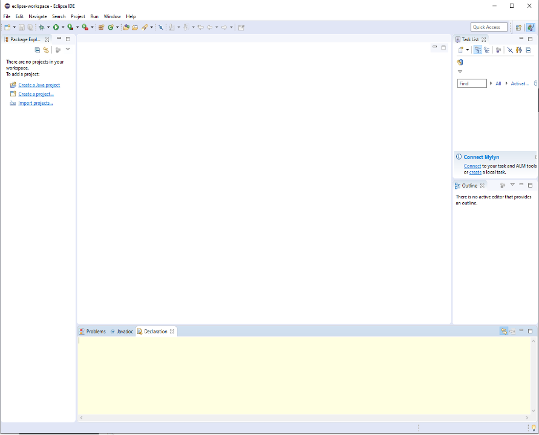
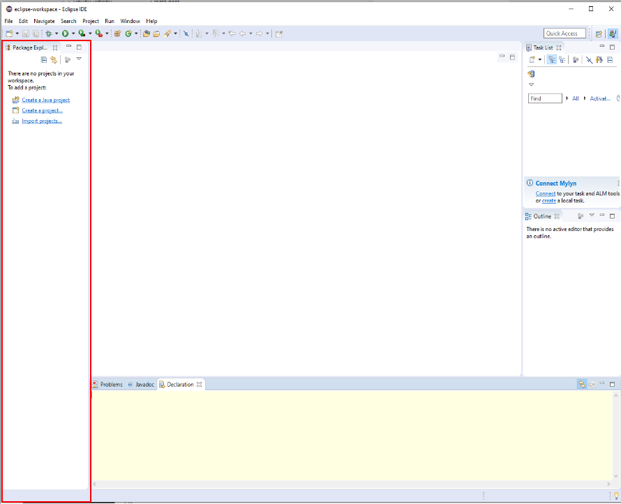
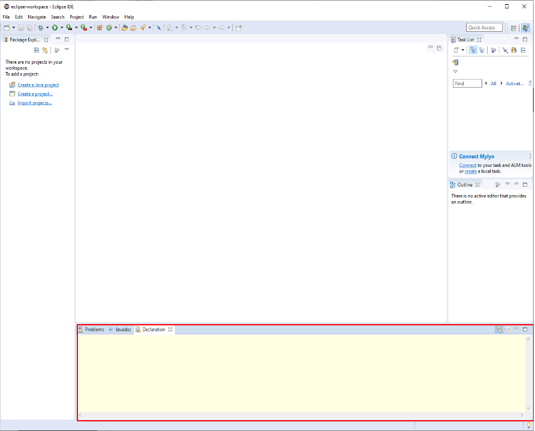

Eclipse userinterface
In this tutorial I will be covering the basics of eclipses user interface to see where a conponent of the ui is you can hover over the image and the area will be highlighted in red.
Project explorer
This area of the ui will hold all of the projects that are in your workspace allowing you to navigate to different projects that you are working on


Console
This are will show the outputs on your code aswell as showing any errors that happen. keep in mind that users of projects that you create will not be able to see the console and you will have to export your project for people to be able to use it.

For the prototype I have only shown two elements of the ui in the full version of the website this page will contain more information about the ui of eclipse